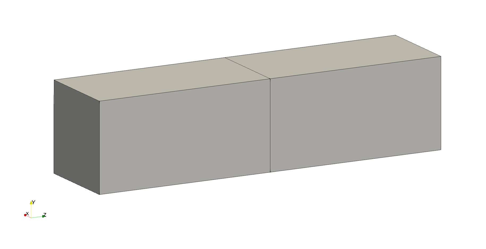

Note
Go to the end to download the full example code.
Basic Usage of FEMIO
FEMIO can be used as a converter, load data in a format, and write data in another format.
Import numpy and femio.
import numpy as np
import femio
First, download the VTK file and place it in the same directory as that of this script. If you load the file with ParaView, it should look as follows.
{kind=link}
Then, read the file using femio.read_files function.
It returns a FEMData object that contains mesh data.
fem_data = femio.read_files('vtk', 'hex.vtk')
Parsing data
Creating data: NODE
Creating data: hex
Elsewise, one can generate a simple mesh using FEMIO’s function.
# fem_data = femio.generate_brick('hex', 1, 1, 2)
A FEMData object has various attributes, e.g., nodes, elements.
The attribute nodes has ids and data that means node positions.
print(f"Node IDs:\n{fem_data.nodes.ids}\n")
print(f"Node data (positions):\n{fem_data.nodes.data}")
Node IDs:
[ 1 2 3 4 5 6 7 8 9 10 11 12]
Node data (positions):
[[0. 0. 0. ]
[0.1 0. 0. ]
[0.1 0.1 0. ]
[0. 0.1 0. ]
[0. 0. 0.2]
[0.1 0. 0.2]
[0.1 0.1 0.2]
[0. 0.1 0.2]
[0. 0. 0.4]
[0.1 0. 0.4]
[0.1 0.1 0.4]
[0. 0.1 0.4]]
The attribute elements has ids and data that means node
connectivities based on node IDs.
print(f"Element IDs:\n{fem_data.elements.ids}\n")
print(f"Element data (positions):\n{fem_data.elements.data}")
Element IDs:
[1 2]
Element data (positions):
[[ 1 2 3 4 5 6 7 8]
[ 5 6 7 8 9 10 11 12]]
Here, please note that the term ‘ID’ differs from the array’s index. Array’s index always starts from zero and is consecutive. However, ID does not necessarily start from zero and is consecutive. By default, ID starts from one even if the original format’s ID starts from zero (like VTK).
Please be aware that they correspond to loc and iloc in
pandas,
and one can actually use them to access data.
print(fem_data.nodes.loc[3].values) # Access with ID
print(fem_data.nodes.iloc[2].values) # Access with index
[[0.1 0.1 0. ]]
[[0.1 0.1 0. ]]
Now, let’s add analysis conditions to perform heat analysis using FrontISTR.
To add boundary conditions, we first create FEMAttribute objects,
then add them to the fem_data.
fixtemp = femio.FEMAttribute('fixtemp', np.array([1, 12]), np.array([0., 1.]))
fem_data.constraints.update({'fixtemp': fixtemp})
Creating data: fixtemp
If you want to add several data with the same IDs, you can use the
femio.fem_attributes.FEMAttributes.update_data() method.
Here, 'MAT_ALL' is the ID (can be multiple).
fem_data.materials.update_data(
'MAT_ALL', {
'density': np.array([[1., 0.]]),
'specific_heat': np.array([[1., 0.]]),
'thermal_conductivity': np.array([[1., 0.]])})
fem_data.settings['solution_type'] = 'HEAT'
Creating data: density
Creating data: specific_heat
Creating data: thermal_conductivity
Next, we add the section’s information to connect the material defined above
to the element group ('ALL' here means all elements in the mesh).
fem_data.sections.update_data(
'MAT_ALL', {'TYPE': 'SOLID', 'EGRP': 'ALL'})
Creating data: TYPE
Creating data: EGRP
Then, we write a FrontISTR data directory.
fem_data.write('fistr', '00_basic_out/mesh', overwrite=True)
Start writing data
Start msh header
2024-05-24 10:59:37.605248
Start nodes
2024-05-24 10:59:37.605443
Start element
2024-05-24 10:59:37.607563
Start element group
2024-05-24 10:59:37.611627
Start section
2024-05-24 10:59:37.611684
Start material
2024-05-24 10:59:37.615834
Start cnt header
2024-05-24 10:59:37.620747
Start fixtemp
2024-05-24 10:59:37.620962
Start cnt setting
2024-05-24 10:59:37.621764
File written in: 00_basic_out/mesh.msh
File written in: 00_basic_out/mesh.cnt
File written in: 00_basic_out/hecmw_ctrl.dat
Finally, run FrontISTR like a bash script shown below (Docker required).
cd 00_basic_out
docker pull registry.gitlab.com/frontistr-commons/frontistr/fistr1:master
docker run -it --sig-proxy=false --rm -u $UID -v $PWD:$PWD -w $PWD \
registry.gitlab.com/frontistr-commons/frontistr/fistr1:master fistr1 -t 1
If you load the resultant file 00_basic_out/mesh_vis_psf.0001.inp
in ParaView, it will look as follows.
{kind=link}
In addition, you can load that file and analyze the data.
res_fem_data = femio.read_files('ucd', '00_basic_out/mesh_vis_psf.0001.inp')
temperature = res_fem_data.nodal_data['TEMPERATURE'].data
print(f"\nCalculated temperature:\n{temperature}\n")
print(f"Mean temperature:\n{np.mean(temperature)}")
Parsing data
Reading file: 00_basic_out/mesh_vis_psf.0001.inp
Creating data: NODE
Creating data: ELEMENT
Creating data: TEMPERATURE
Calculated temperature:
[[0. ]
[0.3002334 ]
[0.22448547]
[0.32102695]
[0.57033736]
[0.48016126]
[0.51983874]
[0.42966264]
[0.67897305]
[0.77551453]
[0.6997666 ]
[1. ]]
Mean temperature:
0.5
Total running time of the script: (0 minutes 0.498 seconds)